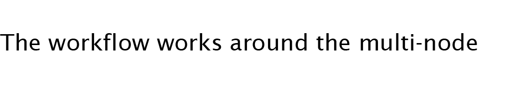

Libish Murugesan - Robotics and Architecture Portfolio
CCLT
The project focused on recycling offcuts fromwood manufacturing into bespoke products ,
The project explored the themes of material computation and fabrication challenges.
A Bottom-up design approach to mitigate and understand material manufacturing affordances and understanding material effects from the creasing process.
Studio 3, MRAC01.
My contribution - Material to Design research, Wood working,
Scanning & ML, Robot calibration.
pictures and diagrams
Extrapolations on double curvature using curve creasing patterns.
pictures by Ipek Attaragolu, Mike Blackburn
Challenges -
Retrofitting irregular material properties to a explicit design application.
Machine learning piplelines to augument design selection of curvatures in panels and
A Narrow design space -
A scaled demons trator of the fabrication setup.
Automated Spolia
Automation in construction, focused on developing a system for perception-assisted grasping and placement in robotic fabrication.
The research deals with the problems in computational design and integration challenges of robotic fabrication with non-standard building materials.
In specific, the tilling of an irregular substrate with stone shards salvaged from demolition waste; solved through visual perception and feedback mechanisms in robot control.
Extrapolations on double curvature using curve creasing patterns.
A scaled demonstrator of the fabrication setup.
Thesis on going, MRAC02,
Leveraging design intuition and deployable open-source computational algorithms geared towards generating novel fabrication workflows in design research and automating mundane tasks in construction.
This paper explores automation as a collaborative process rather than developing explicit machine intelligence, focused on empowering artists with offline and semi-real-time robotic workflows.
Leveraging design intuition and deployable open-source computational algorithms geared towards generating novel fabrication workflows in design research and automating mundane tasks in construction.
This paper explores automation as a collaborative process rather than developing explicit machine intelligence, focused on empowering artists with offline and semi-real-time robotic workflows.
Extrapolations on double curvature using curve creasing patterns.
Crease Forming
The project focuses on producing metal forming workflows on a robotic arm, inspired by traditional forming techniuqes and the design approximated by origami folding techniques,
and rapid physics simulations to iterate ideas.
While adjusting for the fabrication parameters in design and appllication.
A Bottom-up design approach to mitigate and understand material manufacturing affordances and understanding material effects from the creasing process.
Studio 1, MRAC01, published as a paper “Programming twists” in Ecaad 2022
A scaled demonstrator of the fabrication setup.
Extrapolations on double curvature using curve creasing patterns.
Programming twists
Exploring the geometric affordances of aluminium through flexible robotic workflows.
The fabrication approach refers to a forming process.
This has been achieved by installing a wheel cutter on a small workshop hydraulic press and a robot feeding the material into the forming station.
The design-to-production pipelines are auto
mated and designed for a small payload robot that allows for a large variety of geometric possibilities. Fabrication challenges of the process have been documented, such as spring back and elastic/plastic deformation of the material.
Thermal Point Cloud Aquisition and Assembling
In order to save time and organise works, the turtlebot was used for testing different parameters and all configurations will be refered to realsense camera on the drone as final outcome.
Multispectral configuration
This project is about mapping the thermal environment through mobile robots and drones.
Working with sensors namely, thermal, rgb and depth cameras using a variety of ROS packages and tools such as openCV.
The focus will be on developing and refining capture parameters for the specific applications that will be deployed on the autonomous vehicles.
The turtlebot carries astra camera and generates point cloud thorough three main ROS algorithm as sensors bring_up, depth_image_proc and laser_assembler. using gmapping codes as a interface to map and save the environment for the goal of autonomous navigation then remote control of the robot through 2-D navigation goals in rviz.
The workflow works around the multi-node system with the ROS middleware framework.
We also explored trying to combine laser assembler while navigating, using gmapping codes as a interface to map and save the environment for the goal of autonomous navigation then remote control of the robot through 2-D navigation goals in rviz.
The workflow works around the multi-node system with the ROS middleware framework.
Workshop 2.2 , MRAC01
Functions include creating disparity images and point clouds, as well as registering (reprojecting) a depth image into another camera frame.

Non linear- lattice 3d printing
The project aimed at exploring non-linear 3d printing stategies , in particular space-frame lattice structures with 3d printing on a robotic arm.
Printing the apex of the pyramid.
Printing the Second layer of the lattice
An especially challenging aspect of the design was fine-tuning the apex of the pyramid.
Timing the extruder to stop, wait, and cool was crucial at this moment – if the material cooled too much it would stick to the tip and drag along the rest of the toolpath, if the wait time was too short, the material would not be hard enough to support itself.
These deviations across the 0.5m span of the overall prototype became apparent when printing the upper row of the structure and nothing seemed to line up. Efforts were made to correct for these deviations
Workshop 1.2 , MRAC
The repetable module.
The Space frame prototype fabricated
Gmapping and marking of the scene
Plant health detection and mapping
Plant_D is a rover-based workflow for city-wide application of image processing and machine learning for plants within the city’s landscape.
The workflow works around the multi-node system with the ROS middleware framework.
The workflow works around the multi-node system with the ROS middleware framework.
plant status detection on the camera feed from the turtlebot
Software semianr 2.1, MRAC01
The aims and objective of the project were to create a database of diseased plants and locate them on the scanned map using markers.
The training dataset allowed us to differentiate between diseased and healthy plants based on images labelled in reddit and google search, along with datasets from Kaggle.
Project objectives
Interfacing with ROS.
Localization and navigation, Gmapping.
Diseased Plant detection using deep learning
Mapping detected plant health in space.
Metal Cloud
Auxetic material simulation using Physics simulations,
Estimating the in-plane expansion of the chosen pattern.
Team(2020)- for Folds design studio in collaboration with SRI design lab , Worked as a research assistant on computation and fabrication.
This pavilion represents the exploration of architecture in a manufacturing perspective, exploring materiality and industrial processes. The focus here is on fabrication techniques and intersection of divergent techniques in an architectural element.
The problem statement incurred was usage of minimal materials to achieve the form using Robotic CNC and hands on fabrication.
The Principles of modernism have been shifted here utilizing minimal manufacturing, processing raw materials into the finished outputs with minimal wastage.
The Auxetic structure allowed for the determined form to be achieved as the metal behaved as a fabric giving in to the form folded volumes
The structure allowed for the determined form to be achieved as the metal behaved as a fabric, with variable rigidity depending on the thickness,giving form to the folded volumes
Prototyping of intended forms were explored on a programmed cnc router,
The final pavilion called for an organic structure partly influenced by gravity and by artistic hammering.
Redefining low-cost housing through incremental modules and user defined communes.
User priorities drive design in a bottom up approach, designed incremental modules for each four typologies have been used to generate communes based on a multi-objective optimisation model.
BUILDING FOR A BILLION
Team(2018)- for Fhd Group ,on computational design ,3d modeling.
Algorithm Objectives ,Maximizing number of modules , minimizing incident surface radiation,maximizing social space (isovists).

Aggregation of modules into communes that defines the planning of the entire settlement.
-5.jpg)
Algorithmic optimization of the length of the facade facing the river front , ensuring that all the rooms offered have a unobstructed view.
Bhavan - Hotel design
Semester project 2017, as part of academic exercises, studied and documented and designed a 5-star hotel.
The design of a luxury hotel on the river-front of the new city of Amaravati, required considerations in accommodating balance between public and private spaces in relation to the viewfronts and the intrinsic spatial layouts.
The typical floor plan showing view facing rooms and
public spaces in negative spaces.
Urban Rejuvenation- Urban design studio
As a major civic,
Center , the development of character and a parallel overhead structure along intersecting transit routes were crucial to the organization.
The spatial solution lies primarily in the making of a parallel space devoid of rush on the platforms
Intervention of public infrastructure,
By providing adequate pedestrian spaces and supporting amenities, For a transit center in-situ. Recreation as a necessary intervention in the dense urban Fabric.
Semester project 2019, as part of academic team exercises, studied and documented and designed a intervention to the Vijayawada railway station..
The Street as a urban landscape has been explored within the built structure and the edges of the mixed use itself, as it bleeds into the city streets.
Based on principles from Pattern Language by Christopher Alexander, building heights and Spatial characteristics are explored into the interface between residential ,commercial and recreational spaces, negotiating with building by-laws.
The mixed use typology resolves the residential street, the street side shopping centers, malls and workspaces in a single typology of built environment.
Mixed use developement - Amarvati
The site was
developed in accordance with constraints of the neighborhood and the program.
The residential street
Semester project 2018, as part of academic project, developed a mixed use development in the new city of amaravathi.
Chatras - Landscape Design-
Annual daylight analysis indicated a need for shading between the residential and institutional blocks of the campus
Parts of the campus.
Semester project 2018, as part of academic exercises.
On exploration of shading devices ,deployable origami structures employed by the solar sails in satellites were an inspiration.
A Physics simulation was employed in the design of the folded plate structure with radial piston actuators.
The responsive design, allows for retraction and expansion of the shades in accordance with varying light intensities during the day.
Providing a natural enhancement in social character of the space in the hot summer afternoons and the evenings
Bamboo Pavillion
The Bamboo shelter was developed after prototyping several anti-clastic and syn-clastic structures and forms, which lead us to the desired geometry ,desirable for manufacturing.
Shading in the outdoor pool deck is crucial while also allowing ventilation through the tatch of the shelter, The porosity of the tacht allows for a cool shade with the warm and dry climate of Hyderabad , India.
Joints and markings were optimised for rope-knots and a traditional labour workforce.
Interfacing with non-conventional joint systems and non-dimensional material called for a flexible design with affordable tolerances,
And flexible communication channels on site.
with the design dictating the overall structure and form, the design itself is realised by assembly and a equillibrium achieved in assembly
For FHD group (2019)

The Atrium being the central focus of the spatial program, necessitated in a unique structure.
Exploratorium of new media and art
The exploratorium redefines museum in the context of new media installations, the point of focus here being the development of new media experiences and ways in accommodating them in the typology of a public space.
And explores questions on what is the Apeal of modern art in the digital age and rises questions on ownership and public domains
Semester project 2019, as part of thesis , developed a new-media Museum project.
what is art in this age of digital media?
Spatial experiences and the journey through a building is being explored through several interfaces and media.
The question of physical objects as a specimens and objects of atttraction is being questioned through virtual reality and newmedia art.
Miscellaneous Prototyping projects
The prototyping of a unit of a pavilion, generation of fabrication drawings by grouping faces and unrolling through graph theory and physics simulation.
An Icosadodecahedron (20 triangular faces,12 pentagonal faces )with each side being a scissor joint makes this transformable-structure,inspired by the Hobberman sphere, manufacturing affordances for sliding joints,
Prototyping exercises (2020),
In view of the pandemic and Acute shortage of medical masks and supplies, we developed several components and manufactured them through 3d printing PLA plastic for masks and laser cutting to make face shields.
The masks and were fitted with Hepa filters which can be replaced and the contraption reused after disinfection.
The masks and were fitted with Hepa filters which can be replaced and the contraption reused after disinfection.
Sensing the thermal environment
Sensing the thermal environment especially convection in buildings was a key challemge of this seminar, with various complimentary techniques explored in this regard.
Schlieren imaging
Schlieren Imaging to understand movement of hot air around objects, here the camera as a sensor leveraged our understanding of flow with optics.
Computer-vision algorithms like optical-flow and histogram of gradients are applied here to visualise the vector fields generated around the flow.
Mapping convection using Background oriented schlieren imaging,
Imaging technique without reliance on optics
Studio Semianr 2, Sensing Machines, MRAC01
The change in pixels across each frame of a video and direction of flow is maped in vectors. the speed and velocity is thereby measured across a vector field.
flow patterns around forms mapped by Schlieren imaging and the HOG algorithm
Mapping UTFI based on Vector fields generated by Urban Scale CFD simulations, - Studying thermal comfort in the Hottest and coldest weeks on site.
The urban canyon effect , visualised by numerical simulation in a windtunnel.